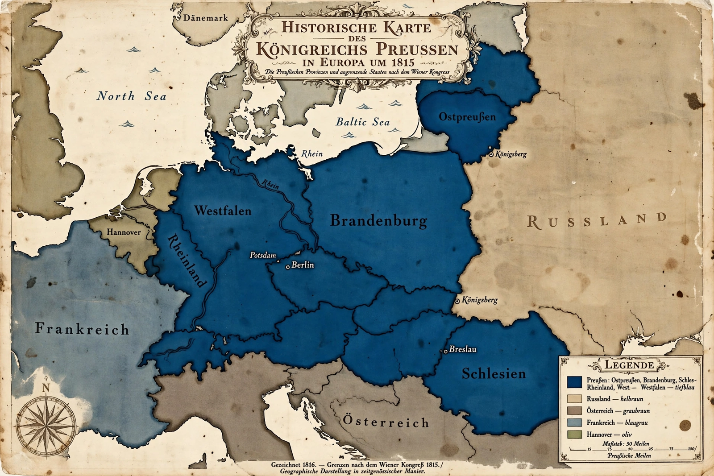

Prussia
Prussia was a German state that originated in the Baltic region of the Old Prussians and rose, as Brandenburg-Prussia under the Hohenzollern dynasty, to become the dominant power of Germany and one of the great powers of Europe. It took its name from the land of the Baltic Prussians, east of the Vistula, conquered and Germanised by the Teutonic Knights from the 13th century. Proclaimed a kingdom in 1701 (Frederick I crowned at Königsberg), Prussia under Frederick the Great (reigned 1740–86) seized Silesia from Austria and joined the first rank of European powers.

Rise and unification of Germany
Defeated disastrously by Napoleon in 1806, Prussia reformed its army, administration and universities, then played a leading role in the Wars of Liberation (1813–15) — its troops, under Blücher, arrived decisively at Waterloo. In the 19th century Prussia industrialised the Ruhr and Rhineland, founded the Zollverein customs union, and under Chancellor Otto von Bismarck won three wars (against Denmark 1864, Austria 1866 and France 1870–71) that unified Germany as the German Empire, with the Prussian king as Kaiser. Prussia remained the empire's — and later Weimar Germany's — largest state, covering about two-thirds of its territory.
Abolition and legacy
After the Second World War, the Allies blamed "Prussian militarism" for German aggression: East Prussia was divided between Poland and the USSR (Königsberg became Kaliningrad), millions of Germans were expelled westward, and in 1947 the Allied Control Council formally abolished the Prussian state. Its legacy is double-sided: militarism and authoritarian obedience, but also administrative efficiency, religious tolerance for its era, the research university, and the "Prussian virtues" of duty and frugality. Since 1990 Berlin has again been the capital of a united Germany on old Prussian ground.